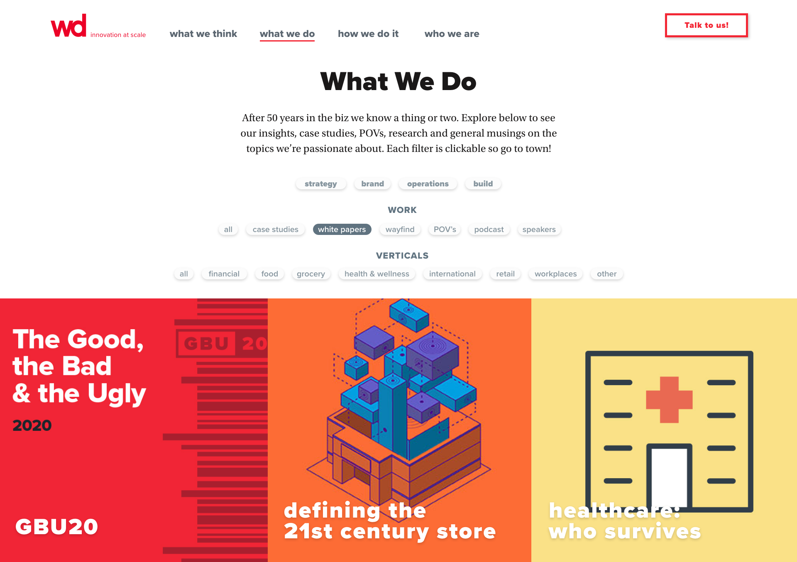
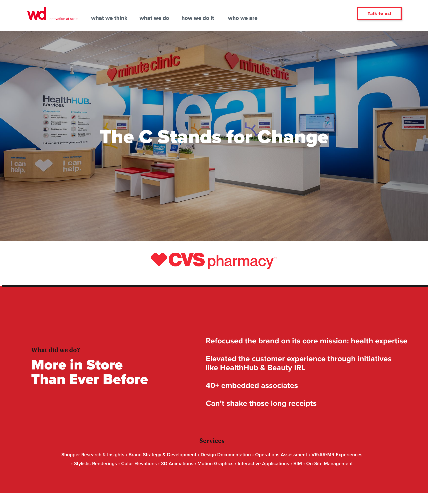

WD Partners is an end-to-end design firm located in Dublin, Ohio. The WD Partners website had not been updated in a couple of years and was in need of a complete refresh.
I was selected as the principal designer charged with the complete redesign of our corporate website. The main goal of the redesign was to simplify and amplify — making the website more streamlined and straightforward, yet pack a punch.

The redesigned WD Partners landing page.
In one of the earliest meetings I had with key stakeholders, the CEO brought up one of the biggest pain-points for the company — "Why are clients still shocked that WD is an end-to-end firm? What can we do to fix this?"
The solution? Bring our end-to-end services to the landing page of our website. By adding the services to the bottom navigation, we allow users to directly click on the service(s) that are applicable to them, or scroll down through educational "billboards" that describe our end-to-end journey.
This creates two distinct paths: one for the client who knows exactly what service they want, and an educational path for clients who might not yet know about WD's full range of services.

Click to enlarge

Click to enlarge
While building out the initial wireframes, we had WD's case studies and thought leadership spread across different pages — What We Think, What We Say, What We Do, and Who We Are.
After organizing content into each category, we realized that What We Think, What We Say, and What We Do were all our biggest selling points. Splitting them across three separate pages was burying the most valuable content.
Instead of making users click through three similar pages, we consolidated everything under What We Do — guiding users to the area of the site with the most relevant content for them to filter through.
I created a three-tiered filtering system where users could sort through the content that mattered most to them.

Click to enlarge

Click to enlarge

Click to enlarge
The most effective and popular part of WD's website is the case studies — the projects we show potential clients to demonstrate our capabilities. It was paramount that this portion of the site keep up with the times and showcase WD's expansive work.
Our research began with a competitive analysis of similar design agencies. We did a deep dive on how they presented case studies, their primary color systems, and how work was showcased. We also gathered data from the current website to identify our most visited pages.
Using this research, I began whiteboarding lo-fi wireframes of how the case studies should function. I then moved into a high-fidelity prototype in Adobe XD — iterating through over 15 versions while holding ongoing meetings with key stakeholders and subject matter experts to ensure the redesign covered everything needed to attract new clients.

Click to enlarge

Click to enlarge
